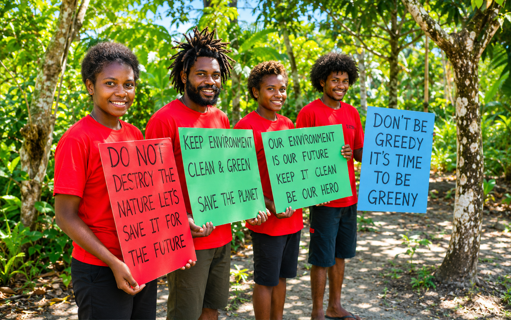
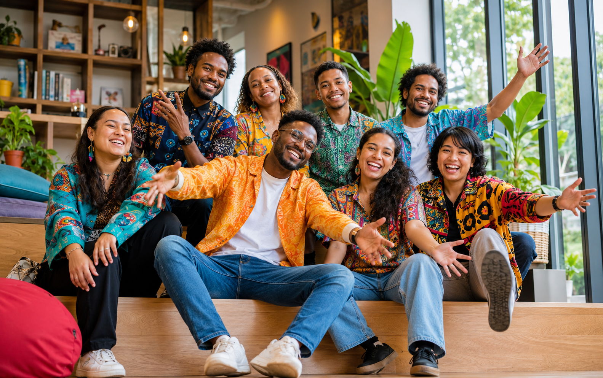

Yayasan Inisiatif, Fasilitasi, Kolaborasi untuk Papua
Kami bergerak dalam penginjilan yang berdampak sosial, sambil memfasilitasi pelatihan ekonomi, pendampingan usaha, dan kolaborasi lintas komunitas agar generasi muda Papua bertumbuh secara rohani dan mandiri.
Yayasan Inisiatif, Fasilitasi, dan Kolaborasi untuk Papua berfokus pada pelayanan penginjilan yang berjalan beriringan dengan penguatan ekonomi. Fokus utama kami adalah anak-anak muda Papua agar memiliki karakter, keterampilan, dan kesempatan untuk membangun masa depan yang mandiri.
Kegiatan penginjilan, pemuridan, dan penguatan ekonomi kreatif yang dijalankan bersama komunitas muda Papua.

Ibadah dan pemuridan anak muda lintas komunitas di Papua.
Pelatihan bisnis dasar, keuangan, dan pemasaran digital.

Pendampingan karakter dan kepemimpinan bagi pemuda gereja.
Akses promosi produk kreatif pemuda dari berbagai wilayah Papua.
Empat program utama untuk pertumbuhan rohani dan kemandirian ekonomi pemuda Papua
Pemuridan kontekstual, kebaktian pemuda, dan pembinaan iman untuk membangun karakter Kristiani.
Pelatihan kewirausahaan, literasi keuangan, dan pendampingan usaha mikro anak muda.
Kelas keterampilan kerja, digital kreatif, dan produksi lokal untuk meningkatkan daya saing.
Sinergi dengan gereja, sekolah, dan mitra lokal untuk memperluas dampak pelayanan di Papua.
Dukung pelayanan penginjilan dan program penguatan ekonomi agar anak muda Papua bertumbuh dalam iman, keterampilan, dan kemandirian.